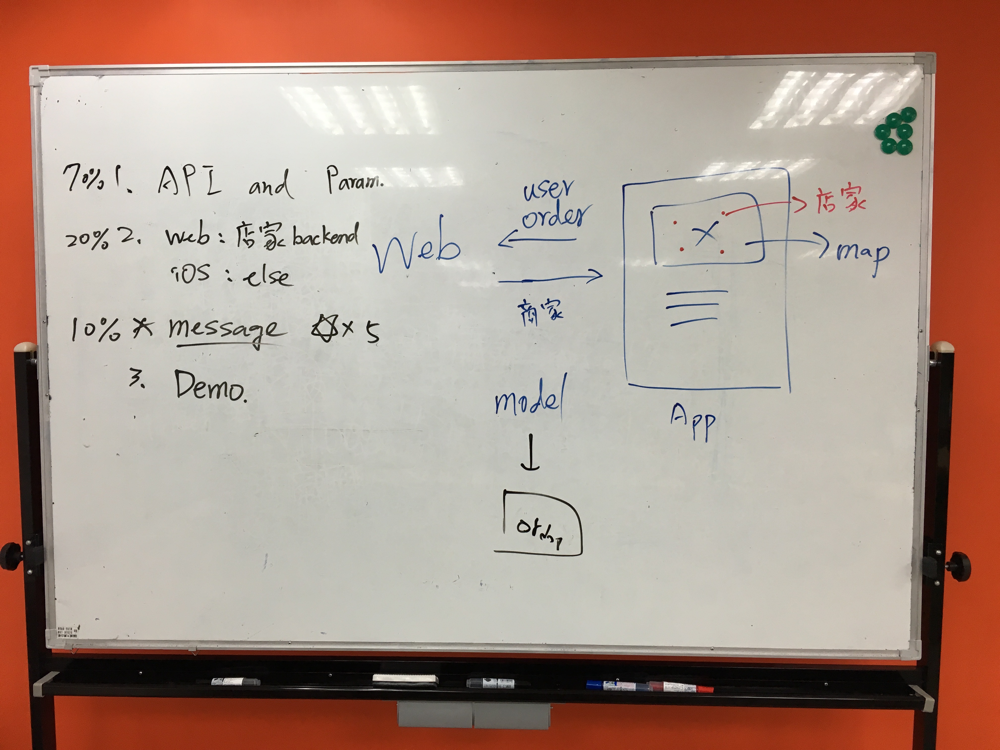
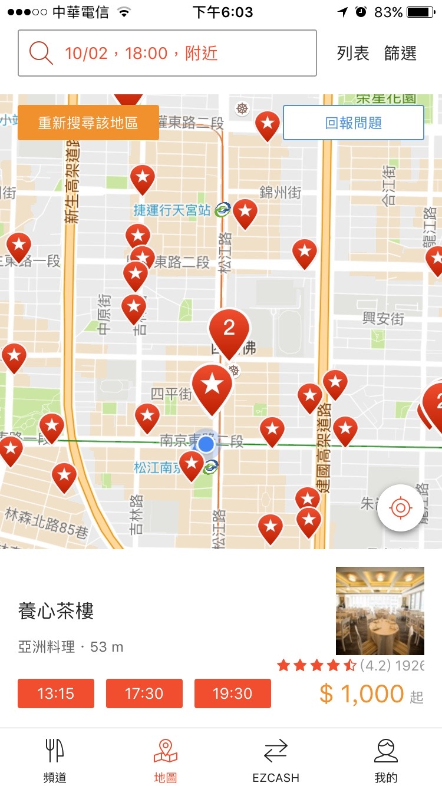

- 更新訂單和商家model 2016-10-05
把腦中的想法從無到有實現出來，相信是工程師們最有成就感的時候
雖然現代的軟體開發哲學強調deliver fast。
但如果沒做好溝通和協調，做出來的產品歪掉也會讓工程師們充滿挫折感
我們把開發的過程記錄下來，以後回顧時能知道當初的決策過程。
在快速迭代中最重要的目的是能早點修正偏差並得到經驗
寄物便 BagKeeper的服務對象是需要在不同地點移動的人，提供寄物地點的媒合以省去身上大包小包的累贅。
概念上與Airbnb類似。對於MVP來說，我們需要展示使用者和店家的的操作平台，也就是APP和Web後台。
使用情境如下:
- 使用者打開寄物便APP輸入寄物件數和時間
- APP顯示地圖標出使用者附近符合條件的店家
- 使用者也能在地圖頁面搜尋指定的地點
- 找到店家後送出訂單並完成預約
- 商家在Web後台能看到訂單
- 使用者前往商家寄物，此時商家可以開始計時
- 使用者前往商家取物，商家結束計時並完成扣款
對於二個平台的開發者來說光有user story還不夠清楚
服務的二端最重要的資訊是訂單和商家資料
第一次討論完後在白板畫下簡單的系統方塊圖，並且寫出各功能的開發比重

由Web端送出商家的資料給APP顯示在地圖上
APP能送出訂單給Web完成預約
搭配圖形和user story，工程師腦中對於整個流程有了大方向
剩下的就是訂單和商家這二個model所需要的資料有哪些
第二次討論時，我們針對訂單和商家model的細項做溝通
以下是討論結果:
訂單model:
- 物件大小 （背包或行李箱）
- 寄物件數
- 日期，時數
- 店家id
- 使用者電話號碼
商家model
- 店名
- 地址
- id
- 空間照片
- 營業時間
- 評價 （用星等）
再來是地圖的頁面，這方面很多APP都有範例可以參考，我使用EZTable的畫面

上方是search bar，畫面中間是使用者附近的地圖並標示商家，下方是商家資訊
有了圖片，product designer和工程師比較容易達成共識
對於刻前端的人來說也不會浪費時間
剩不到一個月就要demo了，希望開發過程能順利，打造出理想的產品。